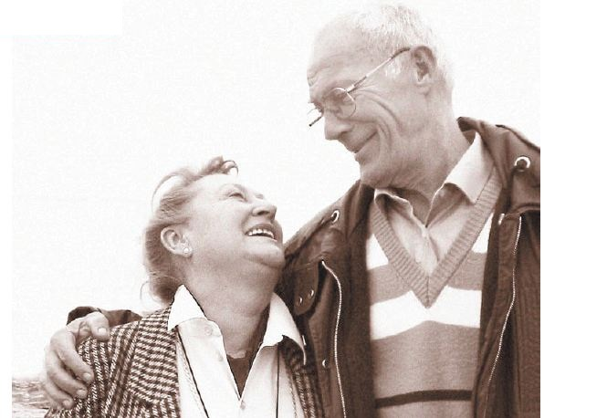

Biobarcoding
A genetic marker for Alzheimer's disease
Christopher Wu
Spring 2005

Consider this: if you had Alzheimer’s disease today, a diagnosis could
not be made with certainty until a post-mortem analysis of your brain
tissue confirmed neurofibrillary tangles and plaques. Recently,
scientists at Northwestern University have become the first to identify
a potential biomarker for Alzheimer’s in human cerebral spinal fluid
(CSF)—a discovery that may aid in an earlier and more accurate
diagnosis in the future.
The National Institute on Neurological Disorders and
Stroke (NINDS) defines Alzheimer’s as a progressive neurodegenerative
disease that impairs cognition and memory. Alzheimer’s, one of the many
possible causes of dementia, is characterized by trademark plaques and
tangles of proteins in the brain. Distinctly different from
Alzheimer’s, dementia is often described as a loss of higher cognitive
faculties such as memory. Therefore, not all dementia is related to
Alzheimer’s. Patients with damaged brain tissue, which can be caused by
strokes, may exhibit dementia completely unrelated to Alzheimer’s.
Depending on the progression of Alzheimer’s, symptoms range from mild
dementia to severe debilitation requiring constant care. According to
Gabe Maletta, M.D., Ph.D., Clinical Professor of Psychiatry and
Clinical Professor of Family Practice at the University of Minnesota,
“Age is currently the most prevalent risk factor for Alzheimer’s
disease.” The NINDS states that the number of people in the population
with the disease doubles for each cohort every five years beyond age 65.
Dr. Maletta notes that patients afflicted with
dementia are often placed in what are called Mild Cognitive Impairment
centers. After initial cognitive testing, the progression of their
dementia is monitored over time by teams of specialists. As they lose
their higher faculties, they may be diagnosed with Alzheimer’s and
recommended for pharmacological treatment. However, these diagnoses are
still based on qualitative observation and quantified by cognitive
testing. Though current clinical diagnoses do not involve a
quantifiable biological marker for Alzheimer’s, that may change in the
future with the work of a team of scientists at Northwestern University.
The team has developed a biobarcode amplification
(BCA) technique that is able to detect and amplify signals of the
potential Alzheimer’s biomarker, amyloid beta-derived diffusible
ligands (ADDLs). William Klein, Ph.D., Professor of Neurobiology and
Physiology of the Cognitive Neurology and Alzheimer’s Disease Center at
Northwestern University’s Institute for Neuroscience, has recently
published works indicating that ADDLs are very small soluble aggregates
of proteins that attack the synapse—the junction between two
communicating neurons necessary for all higher processes of cognition.
According to the theory, if ADDLs were in the brain, traces of ADDLs
could be detected elsewhere in the central nervous system as well. The
team discovered that there were traces of ADDLs in the CSF of patients
suffering from Alzheimer’s disease by employing a technique that they
developed for amplifying the miniscule amounts of these ligands in the
CSF.
According to Chad A. Mirkin, Ph.D., Director of the
International Institute for Nanotechnology at Northwestern University,
and the co-author of the paper describing the BCA technique, “The BCA
technique is currently the most specific technique available today.” A
press release at Northwestern University by Megan Fellman, a science
and engineering editor for Northwestern Magazine, states that the BCA
technique employs magnetic microparticles and gold nanoparticles
hybridized with antibodies specific to the ADDL antigen. “The
antibodies recognize and bind to the ADDL, sandwiching the protein
between the magnetic microparticle and the gold nanoparticle. Attached
to each gold particle are hundreds of thousands of identical strands of
DNA. The DNA acts as a unique label specific to the target, hence the
term ‘barcode DNA.’ The gold-ADDL-magnet complex is removed from
solution magnetically, and the barcode DNA is removed and analyzed
using standard DNA detection methodologies.”
Dr. Klein’s recent research also indicates that
there may be new treatments that specifically utilize ADDL detection.
Dr. Maletta emphasizes that an early diagnosis is vital to a successful
treatment program. Though these new advancements allow doctors to delay
the onset and progression of Alzheimer’s, they are not a cure for the
disease itself. Nevertheless, there is still hope for our future as
senior citizens. With further research, the future of patients
suffering from Alzheimer’s will no longer be a dim one.